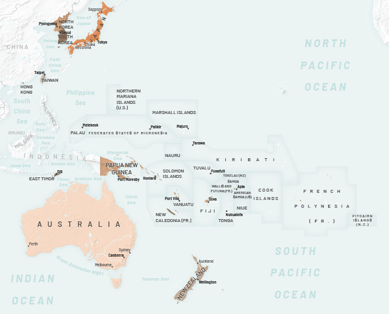
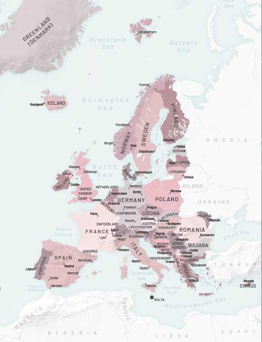
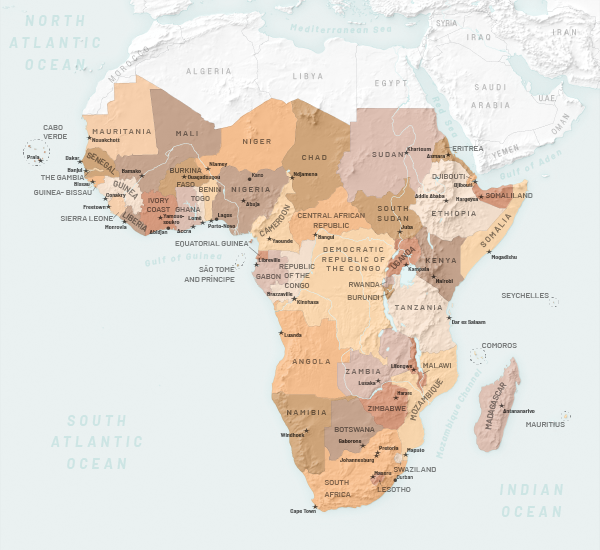
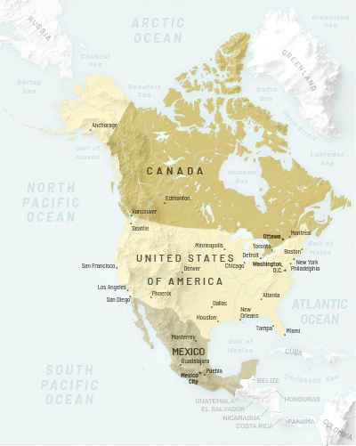

World Regional Geography Reference Maps
These maps were produced to accompany an open source World Regional Geography textbook that will be released in late 2018/early 2019. The design of these maps was developed as a reference for the rest of the maps and graphics that will be produced to accompany the text. Subsequently, this necessitated the design of these maps to be open source, accessible, and created using open source tools as much as possible.
I started by creating a reference base map with each of the 10 regions that will be featured in the text given a unique colorway to be utilized in the design of the reference maps for that region. Each chapter author was allowed to choose the countries featured in their region, meaning this base map needed to be nimble and account for the inclusion of different countries in multiple chapters of the book.
ProcessAll terrain was generated using 90m SRTM data which was mosaiced in ArcMap, clipped, and reprojected by region. I then followed Daniel Huffman’s Blender tutorial to generate the shaded relief using blender.
After much debate about the labeling of natural features, it was decided that the only labels included in the map would be of major populated places, countries both inside and outside of the region, and large bodies of water. All data comes from Natural earth.
China and Its Neighbors

The Pacific Rim

Europe

Africa

North America
